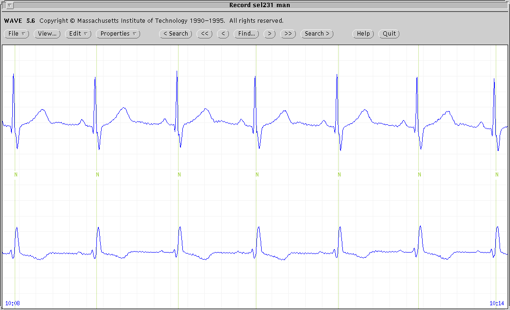
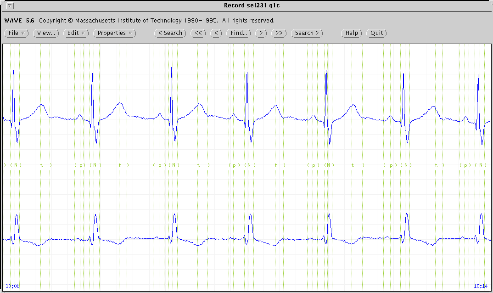

Manual annotations were made by two experts using a SUN workstation using WAVE[3]. The extraction of the annotation file which contains the QRS annotations was made automatically, generating the record.man annotation file. Each expert added estimated waveform boundaries to a copy of the record.man file. In this way we have for each record two manual annotation files denoted by record.qtn, where n=1,2 denotes expert who performed the annotations. A screen similar to that shown shown in Fig. 1 was presented to the expert annotators to support the editing process. Both leads were displayed simultaneously, and then a decision was made about the time location of the fiducial point. Fiducial points were marked by a `' symbol, movable by a cursor, and the times were added to the annotation file. These annotations were audited to correct the inconsistencies detected (e.g., misplaced or missing annotations) and changed to the regular annotation symbols `(' ,`)', `t', `p', and `u', to produce the record.qnc files, containing the final manual annotations. For 11 records the procedure was repeated for a second annotator (n=2).
|  |
|  |